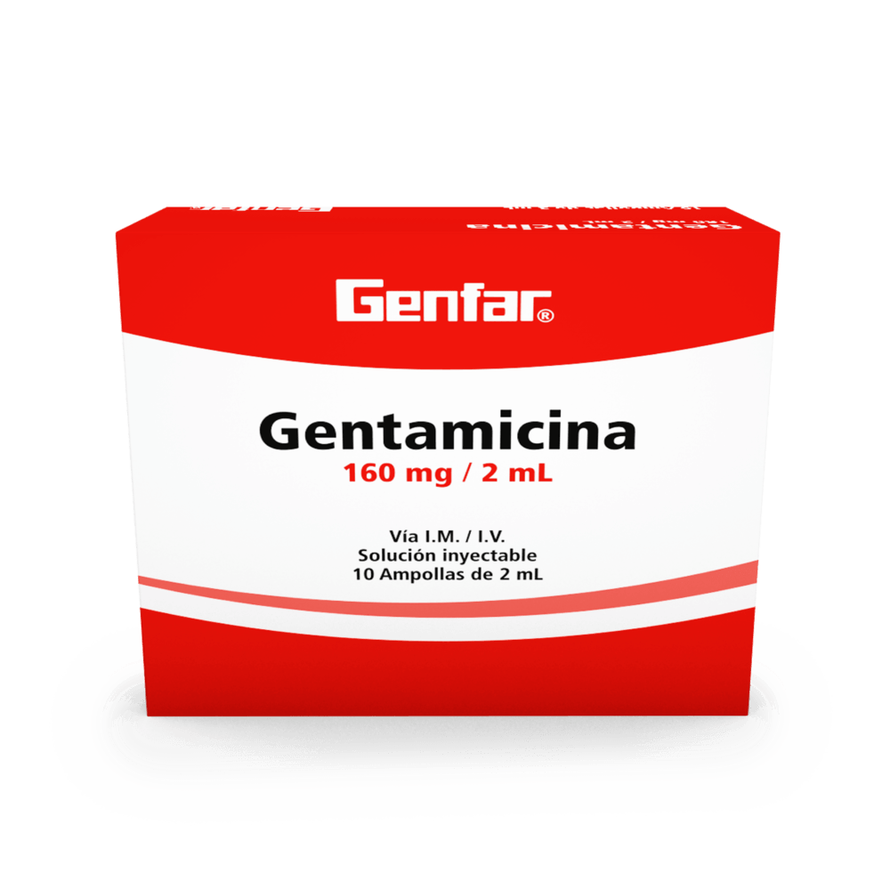

Paracetamol
El paracetamol alivia el dolor y baja la fiebre. El uso de paracetamol a dosis elevada puede dañar el hígado. El riesgo es mayor en pacientes que consumen alcohol de forma continua, toman varios fármacos a la vez, en ancianos y en personas con bajo peso.
Fiebre
Dolocordralan
Dolocordralan es un medicamento que contiene dos principios activos: paracetamol y diclofenaco, el paracetamol es un analgésico y antipirético, mientras que el diclofenaco es un antiinflamatorio no esteroideo (AINE).
Dolor
Ibuprofeno
Antiinflamatorio no esteroideo (AINE) disponible sin receta médica y actúa inhibiendo la producción de prostaglandinas en todo el cuerpo.
Fiebre
Dexametazona
La dexametasona reduce los efectos de los antidiabéticos y potencia la hipocaliemia de diferentes diuréticos y glucósidos cardiotónicos. La acción del corticoide aumenta si se combina con estrógenos y disminuye si se usa con aminoglutetimida, carbamazepina, fenitoína o rifampicina.
Fiebre

Vitamina C
Conocida como ácido ascórbico, es un nutriente hidrosoluble que se encuentra en ciertos alimentos. En el cuerpo, actúa como antioxidante, al ayudar a proteger las células contra los daños causados por los radicales libres.
Fiebre
Naproxeno
Actúa inhibiendo la producción de prostaglandinas en todo el cuerpo y tiene una acción más prolongada que el ibuprofeno
Fiebre
Diclofenaco (Uso Externo)
Actúa inhibiendo la producción de prostaglandinas en todo el cuerpo y tiene propiedades antiinflamatorias y analgésicas potentes.
Antiinflamatorio
Ketorolaco
Actúa inhibiendo la producción de prostaglandinas en todo el cuerpo y es un analgésico potente y se usa para el dolor a corto plazo.
Dolor
Amoxicilina
La amoxicilina es un antibiótico de la familia de las penicilinas que se utiliza para tratar una amplia gama de infecciones bacterianas. Actúa destruyendo las bacterias que causan la enfermedad.
Infeccion
Azitromicina
La azitromicina es un antibiótico de la clase de los macrólidos que se utiliza para tratar una amplia gama de infecciones bacterianas. Actúa inhibiendo la síntesis de proteínas de las bacterias, lo que impide su crecimiento y reproducción.
Infeccion
Ciprofloxacino
El ciprofloxacino es un antibiótico de la clase de las fluoroquinolonas que se utiliza para tratar una amplia gama de infecciones bacterianas. Actúa bloqueando una enzima esencial para la replicación del ADN de las bacterias, lo que impide su crecimiento y reproducción.
Infeccion
Cefaclor
El cefaclor, es un antibiótico de segunda generación perteneciente a la clase de las cefalosporinas. Se utiliza para tratar una amplia gama de infecciones bacterianas que afectan diferentes partes del cuerpo.
Infeccion
Cefalexina
Antibiótico cefalosporínico de primera generación.
Infeccion
Levofloxacino
Antibiótico fluoroquinolónico de amplio espectro.
Infeccion
Metronidazol
Antibiótico nitroimidazólico.
Infeccion
Clindamicina
Antibiótico lincosamida.
Infeccion
Doxiciclina
Antibiótico tetraciclina.
Infeccion.
Trimetoprim-sulfametoxazol
Combinación de un antibiótico de la familia de las trimetoprimas y un sulfamida.
Infeccion
Gentamicina (inyectable)
Antibiótico aminoglucósido.
Infeccion
Vancomicina (inyectable)
Antibiótico glicopéptido.
Infeccion
Linezolid
Antibiótico oxazolidinona.
Infeccion
Daptomicina
Antibiótico lipoide.
Infeccion

Colchicina
Se puede usar para prevenir o tratar un ataque de gota (inflamacion por el acido urico). Si se toma al inicio de un ataque, puede ayudar a aliviar los síntomas rápidamente y acortar la duración del ataque.